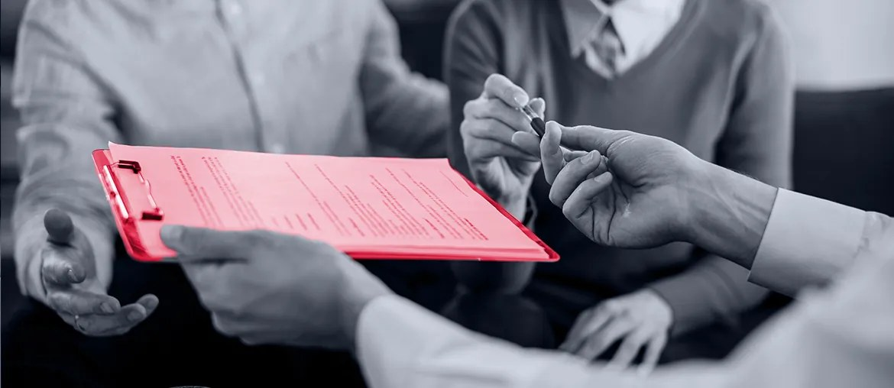

Website hosting platform for insurance agents
Elinext built a web and DevOps platform for insurance agents, with admin access, branded sites, QA, and Azure Kubernetes.
Read case studyProposal for Independer
Independer helps people compare insurance, energy, mortgages, and other fixed costs. Your web platform and Mijn Independer account need steady service, clear controls, and fast fixes.
Why we're here: we saw the Delivery Manager IT Services role. It points to a bigger push for stable internal systems, safer access, better service routines, and audit-ready IT work.
The role tells us Independer is scaling service delivery, not only product delivery. A platform with many comparison flows needs clear ownership for incidents, access, releases, and vendor tools. If that work stays manual, the team can lose time during audits and urgent fixes. The risk is slower change on a service that customers use for important money choices.
Engagement model: a dedicated Elinext squad under your Product or IT owner for eight weeks, with a weekly demo and clear handover notes.
Team shape: one tech lead, two senior web engineers, one QA automation engineer, and one DevOps engineer.
Trace the website, Mijn Independer, access, and support paths that matter most for daily service health.
Turn release checks, incident notes, and vendor scripts into simple steps your IT Services team can repeat.
Automate key compare and close flows, including mobile cases where users report refresh and lost data.
Create clear proof for access reviews, service changes, security actions, and handover work tied to ISO needs.

Elinext built a web and DevOps platform for insurance agents, with admin access, branded sites, QA, and Azure Kubernetes.
Read case study
Elinext helped turn financial specs into a monitored web app used by banks and financial organizations at high volume.
Read case study